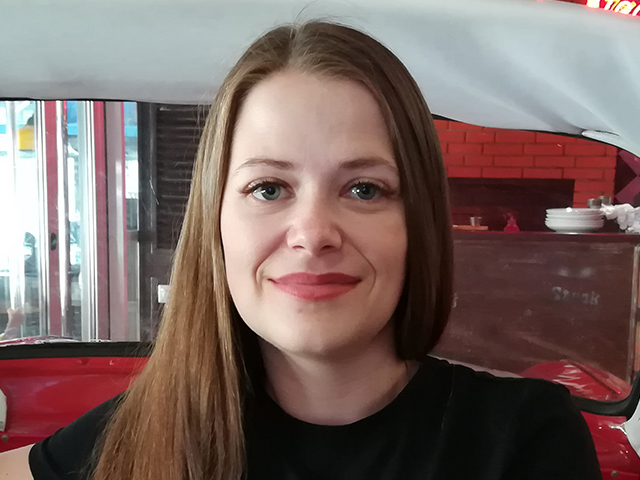

Irina Zhuravleva
Date of Birth: 24.06.1984
Region: Ashkelon
Telephone: +97253-716-02-32
E-mail: zhuravlevairina2012@gmail.com
Skype: iruska242
|
 |
Work experience:
Marketing agency "Lained"
Project manager (03.2019 - 09.2019)
Consultation of the customer on all issues related to the creation of the site.
Full cycle of project creation:
- Determination of the purposes and functions of the future website.
- Creation of a prototype of the future site.
- Transferring the prototype to the designer.
- Transfer of the design layout to the programmer. Monitoring the implementation of all site functionality.
- Checking the finished site for adaptability and cross-browser compatibility.
- Control of site transfer to the customer's domain.
Marketing company "Digital-life24"
Web designer (01.2018 - 09.2019)
- Determination of the purposes and functions of the future website.
- Creation of a prototype of the future site, its content, navigation,
starting with the scheme of logical construction of pages and ending
with thinking over the most successful forms of information presentation.
- Further development of the design of Internet pages and their components according to a well-thought-out prototype.
- Preparation of the layout for layout.
Private enterprise "DC"
Accountant operator 1C (08.2009 - 11.2014)
- Registration of invoices, receipts, expenditures, return invoices in the 1C program.
- Control of warehouse inventories.
- Monthly reconciliation with branches and suppliers.
- Registration of cash receipts and cash receipts
During my work, I was twice awarded a trip abroad and once a cash prize as the best employee.
Closed joint stock company "Alfa-Bank"
Lending specialist (06.2006 - 04.2009)
- Processing of consumer loans in household appliances stores.
- Active sales in the trading floor
Education
Kryvyi Rih Technical University (Kryvyi Rih)
Specialty: software engineer (2001 -2006)
Languages:
- Russian
- Ukrainian
- English
Extra skills
Ability to work in Adobe Photoshop.